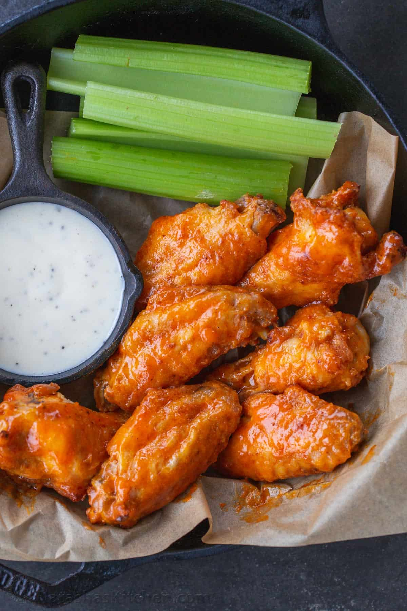

Baked Buffalo Wings

Description
Homemade Buffalo Wings have a secret ingredient that makes them super crisp and irresistible. The easy buffalo sauce is just 3 ingredients and makes these taste like a restaurant-quality appetizer.
Ingredients
- Chicken wings
- Baking powder
- Salt
- Garlic Powder
- Unsalted Butter
- Frank's Original Red Hot Sauce
- Sugar
Steps
- Prepare: Cut wings in half, and pat dry. Preheat the oven and line a rimmed baking sheet with foil and place a wire rack over the pan.
- Make Seasoning: Combine baking powder, salt, and garlic powder.
- Season: Place the chicken wings in a large mixing bowl and toss them in the dry seasoning until well-coated. Assemble the wings in a single layer over the rack.
- Bake: Bake in the center of the oven for 50 minutes, flipping halfway.
- Make Buffalo Sauce: In a medium bowl, stir together melted butter, sugar, and hot sauce.
- Toss: Transfer chicken wings to a bowl, and toss, drizzle with sauce and toss to coat. Serve with your favorite sauce.